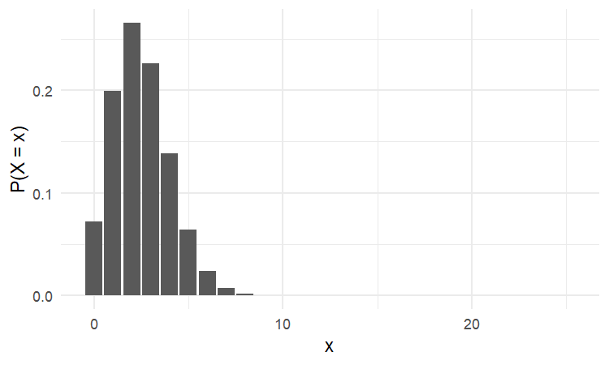
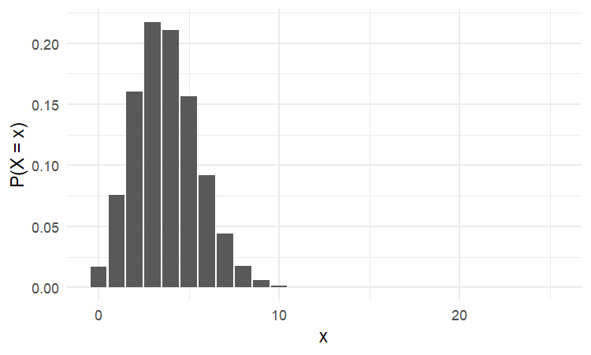
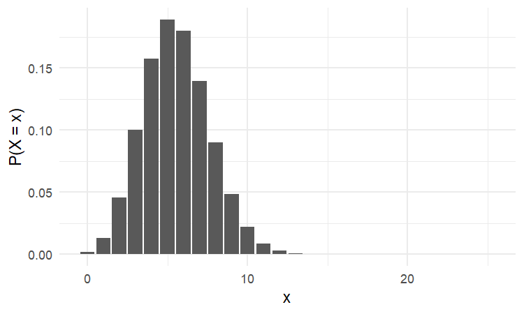
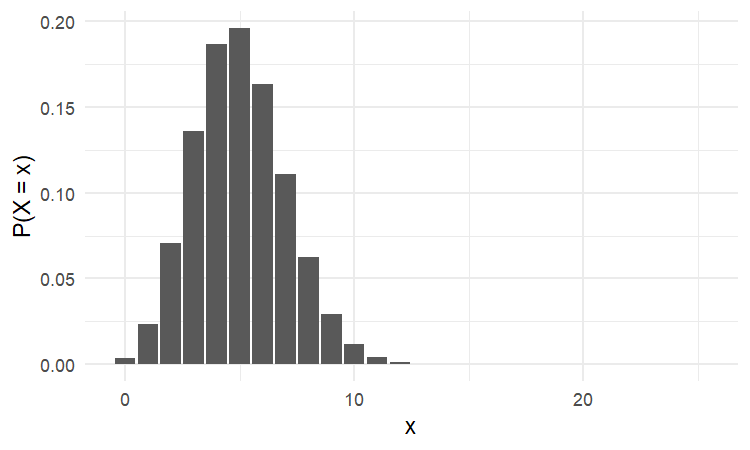

Quiz 6
STAT 109: Introductory Biostatistics
Quiz 6
Quiz 6 Practice Problems
These practice problems cover:
- Lecture 12: Introduction to the binomial test (ESP example), hypotheses \(H_0\) vs \(H_a\), the 4 conditions of a Binomial Random Process (BRP), and the steps of the test.
- Lecture 13: ESP worksheet — stating hypotheses, verifying BRP conditions, identifying \(n\) and \(p\), and finding the p-value.
- Lecture 14: Binomial test steps and examples (left-handed, defective items, dice, gym use): research question, parameter, hypotheses, null distribution plot, adding the observed data and shading the p-value on the graph, and drawing conclusions.
Instructions
- Work without notes first; then check your answers against the solutions in Canvas.
- For graph questions: The figures show the null distribution (bar plot of \(x\) vs \(P(X=x)\)) with no shading. On each figure, by hand: (1) draw a vertical line at the observed value of \(x\) given in the problem, and (2) shade the bar(s) that correspond to the p-value (in the direction of \(H_a\)).
- The in-person quiz in lab will be created from these practice problems.
Part A: Lecture 12 — Hypotheses and BRP (ESP)
A1. ESP hypotheses
Research question (in words): We want to test whether a person has Extra Sensory Perception (ESP) — the ability to predict outcomes better than chance. To do this, we use an online test: on each of 25 trials, the computer randomly shows one of 5 possible symbols (e.g. circle, cross, star), and the person guesses which symbol it is. If they do not have ESP, they are just guessing among 5 options on each trial. If they do have ESP, we expect them to get more than chance correct.
Let \(p\) = probability of a correct prediction on a single trial (when the person makes one guess).
- Write the null hypothesis \(H_0\) and alternative hypothesis \(H_a\) in symbols.
- In words, what does it mean if \(H_0\) is true? What are we claiming if we believe \(H_a\)?
A2. Four conditions of a Binomial Random Process
Setting: The same ESP test as in A1: 25 trials, 5 possible symbols per trial, the computer picks one symbol at random each time (“open deck”), and the person sees the card (or result) after each guess. We record the number of correct predictions out of 25.
List the 4 conditions of a Binomial Random Process and briefly state why each is satisfied in this setting.
Part B: Lecture 13 — ESP worksheet style
B1. \(n\) and \(p\) under the null
Setting: The same ESP test as in Part A: 25 trials, 5 symbols, the person guesses on each trial. Under the null hypothesis, the person is just guessing (no ESP).
- What is \(n\)?
- What is \(p\) (the probability of a correct guess on one trial under \(H_0\))?
B2. Observed data and p-value direction
Setting: Same ESP test: 25 trials, 5 symbols. Under the null, \(p = 0.2\) (just guessing). We test \(H_0: p = 0.2\) vs \(H_a: p > 0.2\). Suppose you took the test and got 7 correct out of 25.
- What is the observed value of \(x\)?
- The p-value is the probability, assuming \(H_0\) is true, of observing data as or more extreme than the observed \(x\) in the direction of \(H_a\). Write the p-value as a probability involving \(X\) (e.g. \(P(X \geq \ldots)\) or \(P(X \leq \ldots)\)).
- Would you need the right tail, the left tail, or both tails of the null distribution to compute this p-value?
Part C: Graphs — add the data and shade the p-value
Each figure below shows the null distribution for a scenario (bar plot of \(x\) vs \(P(X=x)\)). The plots are unshaded. For each problem:
- On the figure: Draw a vertical line at the observed value of \(x\) (given in the problem).
- On the figure: Shade the bar(s) that represent the p-value (i.e. the region in the direction of \(H_a\): right tail for \(H_a: p > \ldots\), left tail for \(H_a: p < \ldots\), or both tails for \(H_a: p \neq \ldots\)).
- In the blank: State whether the p-value is small or large and give the conclusion (reject \(H_0\) or fail to reject \(H_0\)) in context.
C1. Left-handed students
Research question: Is the proportion of left-handed students at our school higher than the national rate of 10%?
Parameter: \(p\) = proportion of students at our school who are left-handed.
Hypotheses: \(H_0: p = 0.10\) vs \(H_a: p > 0.10\). Under \(H_0\), we use \(n = 25\) and \(p = 0.10\) for the null distribution.
Data: In a random sample of 25 students, \(x = 6\) were left-handed.
The plot below shows the null distribution (\(x\) vs \(P(X=x)\) for \(X \sim \text{Binomial}(25, 0.10)\)).

Your tasks:
- On the figure, add a vertical line at the observed \(x = 6\) and shade the bars that represent the p-value (right tail, in the direction of \(H_a\)).
- p-value = \(P(X \geq 6 \mid H_0)\) = __________ (“small” or “large”).
- Conclusion: __________ \(H_0\). In context: __________.
C2. Defective items
Research question: Is the proportion of defective items from the new supplier less than 15%?
Parameter: \(p\) = proportion of items from the new supplier that are defective.
Hypotheses: \(H_0: p = 0.15\) vs \(H_a: p < 0.15\). Under \(H_0\), we use \(n = 25\) and \(p = 0.15\) for the null distribution.
Data: In a random sample of 25 items from the new supplier, \(x = 3\) were defective.
The plot below shows the null distribution (\(x\) vs \(P(X=x)\) for \(X \sim \text{Binomial}(25, 0.15)\)).

Your tasks:
- On the figure, add a vertical line at the observed \(x = 3\) and shade the bars that represent the p-value (left tail, in the direction of \(H_a\)).
- p-value = \(P(X \leq 3 \mid H_0)\) = __________ (“small” or “large”).
- Conclusion: __________ \(H_0\). In context: __________.
C3. Dice (sum 7 or 11)
Research question: When we roll two dice, is the probability that the sum is 7 or 11 equal to the fair-dice value? (With fair dice, that probability is \(8/36\): 6 ways to get sum 7 plus 2 ways to get sum 11, out of 36 equally likely outcomes.)
Parameter: \(p\) = probability that a single roll of two dice gives a sum of 7 or 11.
Hypotheses: \(H_0: p = 8/36\) vs \(H_a: p \neq 8/36\). Under \(H_0\), we use \(n = 25\) rolls and \(p = 8/36\) for the null distribution.
Data: We rolled the two dice 25 times. The sum was 7 or 11 on \(x = 2\) of those rolls.
The plot below shows the null distribution (\(x\) vs \(P(X=x)\) for \(X \sim \text{Binomial}(25, 8/36)\)).

Your tasks:
- On the figure, add a vertical line at the observed \(x = 2\) and shade the bars that represent the p-value. For a two-sided \(H_a\), shade both tails (the bars for \(x \leq 2\) and for \(x \geq 9\), or the symmetric “more extreme” region).
- p-value = \(P(X \leq 2) + P(X \geq 9)\) under \(H_0\) = __________ (“small” or “large”).
- Conclusion: __________ \(H_0\). In context: __________.
C4. Gym use
Research question: Do more than 20% of students at our school use the gym at least once per week?
Parameter: \(p\) = proportion of students at our school who use the gym at least once per week.
Hypotheses: \(H_0: p = 0.20\) vs \(H_a: p > 0.20\). Under \(H_0\), we use \(n = 25\) and \(p = 0.20\) for the null distribution.
Data: In a random sample of 25 students, \(x = 5\) use the gym at least once per week.
The plot below shows the null distribution (\(x\) vs \(P(X=x)\) for \(X \sim \text{Binomial}(25, 0.20)\)).

Your tasks:
- On the figure, add a vertical line at the observed \(x = 5\) and shade the bars that represent the p-value (right tail, in the direction of \(H_a\)).
- p-value = \(P(X \geq 5 \mid H_0)\) = __________ (“small” or “large”).
- Conclusion: __________ \(H_0\). In context: __________.
Part D: Full steps and one- vs two-sided
D1. Order the steps
Below are 4 key steps of the binomial test, given in random order. Number them 1, 2, 3, 4 in the order we perform them when conducting the test.
- (A) Verify that the 4 conditions of a Binomial Random Process (BRP) are satisfied.
- (B) State the research question, define the parameter \(p\), state \(H_0\) and \(H_a\), and identify \(n\) and \(p\) under \(H_0\).
- (C) Create a plot of the null distribution (\(x\) vs \(P(X=x)\) for the \(n\) and \(p\) under \(H_0\)).
- (D) Collect the data (observe the value of \(x\)) and compare it with the null distribution: on the plot, add the observed \(x\) and shade the bar(s) that represent the p-value; compute the p-value and state the conclusion in context.
Your ordering: 1 = ___ , 2 = ___ , 3 = ___ , 4 = ___
D2. One-sided vs two-sided
Consider a binomial test with null distribution plotted as a bar chart.
- If the alternative hypothesis is one-sided (e.g. \(H_a: p > 0.2\) or \(H_a: p < 0.15\)), do we shade one tail or both tails of the null distribution to find the p-value?
- If the alternative hypothesis is two-sided (e.g. \(H_a: p \neq 8/36\)), do we shade one tail or both tails?
End of Quiz 6 practice problems.